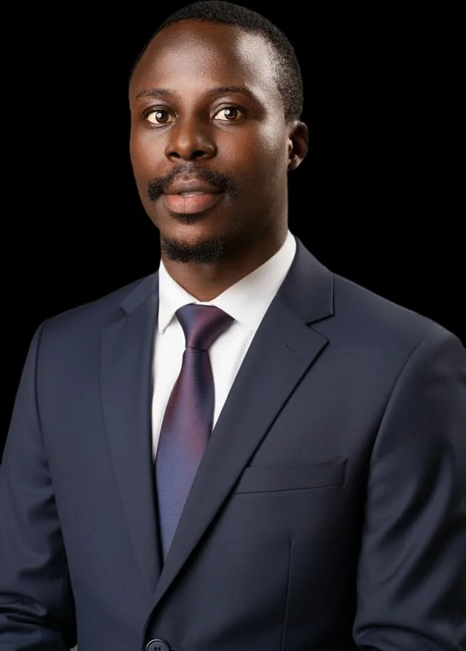

Who we are
For young people who want to become more.
A youth-development movement built around people, purpose and collective growth.
BUILVANTA is a youth-development movement for young people, beginning with those aged 15–20. It is for learners, creators, and emerging leaders who are curious about what they can become and ready to take steady steps toward it.
You may be choosing a direction, building confidence, exploring a skill, or looking for a community to learn alongside. You do not need a polished plan or a track record. A willingness to learn, contribute, and keep going is enough to begin.
What brings us together
- We value growth and effort over appearances.
- We stay curious, ask questions, and remain open to learning.
- We aim to use our abilities responsibly and create value for others.
- We respect different experiences and make space for people to contribute.
We welcome young people from different backgrounds, communities, and beliefs. We aim to meet each person with respect, encourage positive ambition, and make room for different experiences and ideas.
The vision behind BUILVANTA
The Vision Behind BUILVANTA

Afolabi Sunday
Vision Lead, BUILVANTA
Project Manager Business System Architect AI Automation Developer
Afolabi Sunday is from Ekiti State, Nigeria. He holds a B.Sc. in Educational Technology from the University of Ilorin and a Master's degree in Project Management from Lagos State University. He is a Project Manager, Business System Architect and AI Automation Developer, using technology to build practical systems and help businesses work more efficiently. Through training and mentorship, he has impacted over 500 people across seven countries and multiple continents, helping them develop practical knowledge and skills in technology and automation.
Beyond technology, Afolabi has a strong passion for bringing people together and building communities where different talents, experiences and ideas can connect. One expression of this is Billion Mind Speaking Identity (BMIS), an initiative that has brought together people from diverse professional backgrounds, including a robotics engineer in Canada, a senior web developer at Amazon, a professional nurse in the United States, a chef in Portugal, a visual and contemporary artist in Nigeria, an architect in Abuja and many others. He believes that when people connect across professions, backgrounds and geographical boundaries, they create opportunities to learn, collaborate and achieve more together.
Rooted in faith and driven by a belief in the power of mentorship, Afolabi believes young people should have access to the guidance, knowledge and opportunities that help them make better decisions early in life. This conviction inspires his commitment to helping young people, particularly those aged 15–20, develop the right mindset, build useful skills, discover their potential and grow into responsible individuals who create value and positively influence others. BUILVANTA is an expression of that vision: building people who will not only succeed in life, but also make a meaningful difference in the lives of others.